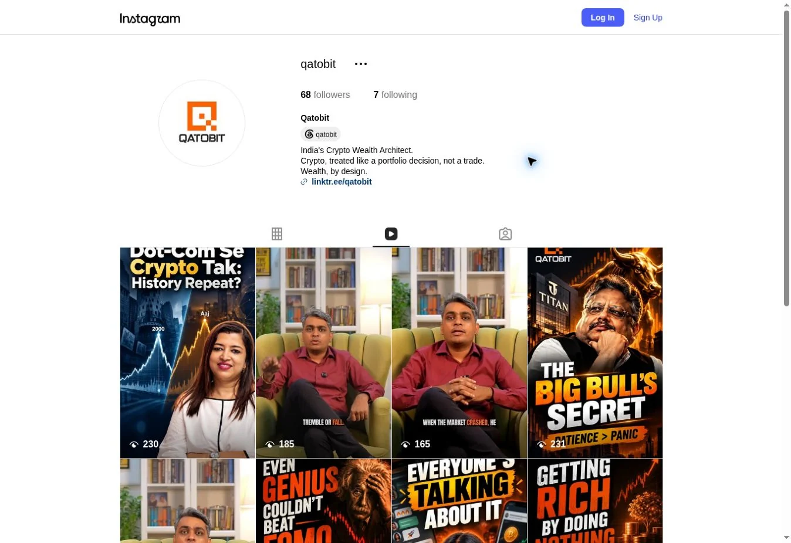
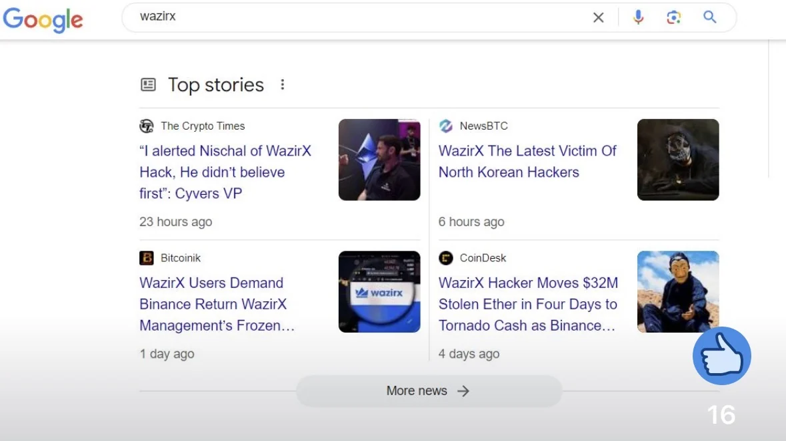
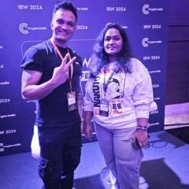
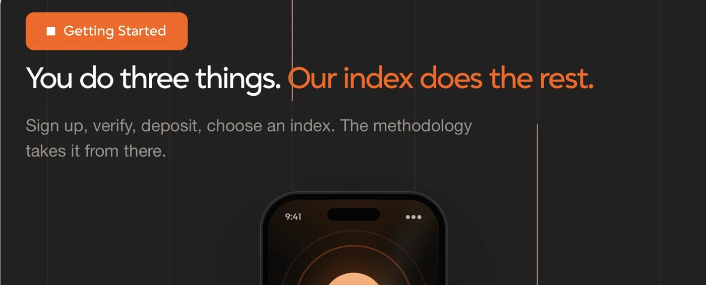
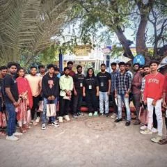

Ecosystem Business Development
n1stake
Research validator and delegation opportunities, qualify programs, map contacts and coordinate partnership actions.
CONTENT · COMMUNICATIONS · COMMUNITY
I turn complex Web3 ideas into stories people understand, share & remember.
Writer, strategist and community builder. From breaking news to brand narratives, I take content from the first idea to the people it needs to reach.





WHAT I BRING TO THE TABLE
Research-led news, explainers and thought leadership. Clear writing, strong editorial judgment and a deep understanding of crypto.
Website copy, launch communications, PR and social strategy that give a product a consistent voice across every touchpoint.
Conversations, creator relationships and online and offline programs that turn an audience into an active community.
SELECTED WORK / 2021—2026
Real work. Real screenshots.
Explore the story behind each project.
No matching projects. Try another keyword or select “All work”.
A LITTLE ABOUT ME
I’ve spent 5+ years working across Web3 content, journalism, social media and communities. My work spans crypto media, exchanges and wealth platforms, with 1,500+ published pieces along the way.
I started in news. Today, I also lead content strategy, shape product and brand communications, create video content and build ecosystem relationships. I like work that combines careful research with a clear voice.
From a WazirX exclusive to a regional crypto explainer, the aim stays the same: make the story useful to the person reading it.
More about my journeyPROOF, NOT JUST PROMISES
A glimpse of the work
and the people around it.
Screenshots document past work. Audience counts and search positions reflect their capture dates.
HOW I WORK
Understand the audience. Find the right story. Get the details right. Keep learning after it goes live.
Work with meI study the product, audience and market, then identify the question the content needs to answer.
I build the angle, format and voice around that question, from a news feature to a launch or video script.
I work with design, growth and product teams, verify the details and keep the publishing pipeline moving.
I use performance data and audience feedback to refine the next piece, campaign or community program.
SELECTED BYLINES
Bitcoin policy and the Texas ecosystem. Shared by U.S. Senator Ted Cruz.
Exclusive reporting on one of India’s biggest crypto exchange hacks.
A wider look at the hack and its lessons for crypto users.
Exploring Bhutan’s role in the Bitcoin economy.
THE JOURNEY SO FAR
Across editorial, social, product communications and the wider Web3 ecosystem.
Central University of Andhra Pradesh · 2019–2021
DeFi, tokenomics and the Web3 ecosystem
Digital Marketing · Discord Community Guide · Business Writing · Web3 Tokenomics
n1stake
Research validator and delegation opportunities, qualify programs, map contacts and coordinate partnership actions.
Qatobit
Led website and product copy, editorial planning, social content, scripts and content-team delivery.
Mudrex
Educational and product-focused writing that makes crypto concepts easier to understand.
Bitcastle
Exchange content across web and social, with campaigns around launches, listings and platform updates.
Cryptopolitan
Crypto reporting alongside publishing, scheduling, engagement and analytics across social channels.
The Crypto Times · TheNewsCrypto
Breaking news, exclusive reporting and ecosystem coverage across crypto, DeFi and regulation.
Krypto Council
Built social and community presence from zero and represented the brand at Web3 events.
PlanetSpark · Communication Specialist & Marketing
October 2021–March 2022
Giggle Bellies · Linguistic Trainer
July 2018–June 2019
THE EVERYDAY TOOLKIT
WordPress · SEMrush · RankMath · Google Analytics · Editorial calendars · SEO · Brand voice
Notion · Trello · Canva · ChatGPT · Claude · Slack · Google Docs
X · LinkedIn · Instagram · Telegram · Discord · Buffer · Hootsuite · Threads · Reddit · Quora
BEFORE WE CONNECT
Content strategy, journalism, PR and communications, social media, community and ecosystem roles. I’m open to full-time, freelance and part-time opportunities.
Yes. I’m APAC based, remote ready and flexible across time zones. We can agree on an overlap that works for the team.
Yes. I create English, Tamil and Tanglish content, including crypto explainers, scripts and social posts adapted to the audience.
Explore my video portfolio on Google Drive ↗, or browse the video projects above.
YOUR NEXT STORY STARTS HERE
Have a role, project or collaboration in mind? I’d love to hear what you’re building.
sneha19murali@gmail.comOpen to full-time, freelance & part-time work.
Remote · Flexible across time zones